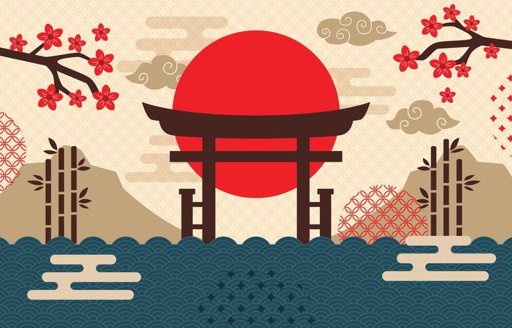

🇯🇵 Joyeux Anniversaire Fio !
Ta famille et tes amis ont organisé cette magnifique aventure au Japon pour toi 🌸✨
Ta famille et tes amis ont organisé cette magnifique aventure au Japon pour toi 🌸✨
Jour 1 : Arrivée à Tokyo – Balade dans Asakusa et visite du temple Senso-ji.
Jour 2 : Découverte d’Akihabara, ses mangas, ses arcades et ses cafés à thème.
Jour 3 : Traversée du Shibuya Crossing et visite de la tour Shibuya Sky.
Jour 4 : Journée nature à Ueno Park et découverte de musées uniques.
Jour 5 : Promenade sous les 10,000 torii de Fushimi Inari-taisha.
Jour 6 : Immersion dans la forêt de bambous d’Arashiyama et visite des singes.
Jour 7 : Exploration des temples : Kiyomizu-dera et balade dans Gion (quartier des geishas).
Jour 8 : Relaxation le long du Philosopher’s Path et découverte artisanale.

Un avant-goût des merveilles que tu vas vivre ✨.
Merci d'être exceptionnelle ❤️